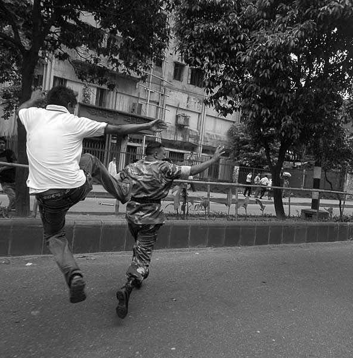

গ্রেফতারের পুর্বে ভয়েস অব আমেরিকাকে দেয়া মুক্তমনার সদস্য ড: আনোয়ার হোসেনের সাক্ষাতকারটি আপনাদের জন্য এখানে তুলে দেয়া হলো:
Get this widget | Share | Track details
বাহিনী দরকার কাদের জন্যে?
বাহিনী দরকার কাদের জন্যে, কাদের জন্যে?
স্বার্থ দূর্গ রক্ষা করা হবে জন অরন্যে।
আহা ... কাদের স্বার্থ কাদের দুর্গ, জন অরন্যে?
যাদের হাতে সব কলকাঠি ধরা তাদের জন্যে।সীমান্তে যদি হানা দিতে চায় বিদেশী শক্তি
বাঁচাতে হবে দেশ, দেশের ইজ্জত, স্বদেশ ভক্তি।
আহা... কাদের ইজ্জত, কাদের দেশ আহা কাদের দুর্গ?
যাদের হাতে সব কলকাঠি ধরা এবং খড়্গ।বলে মালিত ভান্ডার, লুটিত গন্ডার, কাদের ভান্ডার
যারা সৈন্য সেজে যাবে জান দিতে, বলে – “হাই কমান্ডার”।নিজের এলাকায় যদি কারোর পায় ক্ষিদে ও তেষ্টা
যদি কিছু লোক ভীষণ রেগে গিয়ে চ্যাঁচায় শেষটা
যদি তারা দেয় ভীষণ নাড়া ধরে ভিত্তি-প্রাসাদের -
যদি তারা চায় হিসেব বুঝে নিতে রাজা ও প্রজাদের।
যদি তারা বলে এবার খেতে দাও, দু হাতে কাজ দাও -
যদি তারা বলে লুটের যুগ শেষ, কৈফিয়ত দাও।এহেন চ্যাঁচামেচি দেখা দিলে হবে ভীষণ বিভ্রাট
ভীষণ অসুবিধে হবে তাদের যারা আছেন সম্রাট।
ওপরওয়ালাদের স্বার্থ রাখতেই বাহিনী দরকার
শোষিতদের ভিট করে দিয়ে বাঁচে শোষক সরকার।
শোষক স্বার্থ রক্ষা পায় সেনাবাহিনী থাকলে
প্রতিবাদীর দাবী স্তব্ধ করা যায় সৈন্য থাকলে।
কৈশোরে শোনা গানটার কথা মাথায় ঘুরছে ক’দিন ধরে। সুমন চট্টোপাধ্যায়ের একটা অপ্রকাশিত গানের কটি লাইন। শহীদ কাদরির কোন কবিতাকে গানে রূপ দেওয়া কি? মনে পড়ছে না এ মুহূর্তে। গত কদিন ধরে বাংলাদেশের পরিস্থিতি যত দেখছি ততই পরিস্কার হচ্ছে- ভুল ছিল না আমার অনুমান। উই আর ব্যাক টু দ্য স্কয়ার ওয়ান। হাটু বাহিনীকে নিয়ে কি আর সাধে আমার প্রথম থেকেই সংশয় ছিল? সাধে কি আর হয় এত দ্বিধা দ্বন্দ্ব? কতকগুলো বকসন্ন্যাসী বাঘছাল পরে আসলেই কি ধোঁকা দেওয়া যায়? ২১ তারিখের ঘটনায় আবারো বকসন্ন্যাসীদের ছাল-চামড়া খসে পড়ে উন্মোচিত করে দিল তাদের উলংগ দেহখানি, প্রকাশ করে দিল দেশদরদী মুখোশের পিছনে লুকানো হায়নাদের ধারালো নখদন্ত বিশিষ্ট কালো থাবা। আর ডঃ কামাল হোসেন, মতিউর রহমান, নাঈমুল ইসলাম খানদের মত ধামাধরা ‘সুশীল’ কেউকেটা মগজ ব্যাচা বুদ্ধিজীবিরা? তাদেরও “মুখগুলো থেকে মুখোশ গিয়েছে খসে”; কবি অসীম সাহার কবিতার মত –
প্রগতির স্রোতে যারা তুলে আছে পাল
প্রতিক্রিয়ায় তারাই পড়েছে বাধা।
বক সন্ন্যাসী পরে আছে বাঘছাল
উজান ঠেকাতে তারাই রয়েছে বাধা।
কি হয়েছিল গত ২১ তারিখে? সেদিন বিশ্ববিদ্যালয়ের জিমনেশিয়াম মাঠে গণযোগাযোগ ও সাংবাদিকতা বিভাগের সঙ্গে লোক প্রশাসন বিভাগের ফুটবল খেলা চলছিল। ছাত্রদের পেছনে বসে কয়েকজন সেনাসদস্যও খেলা দেখছিলেন। লোক প্রশাসনের এক ছাত্র মেহেদি বোধহয় তার নাম - তাঁদের সামনে ছাতা মাথায় দাঁড়িয়ে ছিলেন। সেটাই মেহেদীর কাল হল। শুনেছি আগেকার দিনে গ্রামের জমিদার বাড়ির সামনে দিয়ে গ্রামের কোন সাধারণ মানুষ ছাতা মাথায় দিয়ে গেলে নাকি মহা ‘অপরাধ’ বলে গন্য করা হত। এখন তো দেশে জমিদার নেই, আছে মহাপ্রতাপশালী হাটু বাহিনী। ছাতা মাথায় সামনে দাঁড়িয়ে খেলা দেখার অপরাধে হাটু বাহিনীর এক সদস্য মেহেদিকে ধমক দেন এবং গালিগালাজ করা শুরু করেন। হাটু বাহিনীর ভাষাও শুনবার মত – “সর এখান থেকে, আবার তর্ক করস, চেনোস আমারে??” বলেই শুরু হল কিল ঘুষি, মার। তা দেখে মেহেদীর বন্ধুরা এগিয়ে এলে, তাদেরও দেওয়া হল উত্তম মধ্যম!
“চেনোস আমারে??” - তোমাদের তো চিনিই বাবারা। চেনার কি আর বেশি বাকি আছে? সারা দেশটারই তো মালিক বনে গেছ তোমরা। তোমাদের না চিনলে কি আর চলে? তোমাদের ভাল মত চেনা বলেই তো গত জুলাই মাসে “জলপাই চাই না” কবিতাখানা লিখেছিলাম, মনে আছে?
ন্যাড়া হয়ে পাঁচ পাঁচটি বার জলপাই তলায় গিয়েছি
পঁচা জলপাই-এর আচারের ঘ্রাণ শুঁকেছি, চেখেছিও ঢের
প্রতিবার চাখতে গিয়ে বিস্বাদে তেতো হয়ে গেছে মুখ
আয়েশ করে খেতে গিয়ে প্রতিবারই জলপাই-এর বীচি
আটকে গিয়েছে গলায়-
কাশতে কাশতে চোখ-মুখ ঠিকরে বেরিয়ে এসেছে
তারপর আবারও সবকিছু ভুলে বুক বেঁধেছি
নতুন স্বাদের জলপাই-এর আচারের আশায়।
আবারও শুনছি জলপাই-এর আচার এসেছে বাজারে
নতুন বোতলে -
অন্য জলপাই-এর আচারের থেকে এটা নাকি আলাদা
এতে নাকি আগের পঁচা জলপাই-এর সেই ঝাঁঝ নেই, দুর্নীতি নেই,
খুব আধুনিক 'সুশীল' কায়দায় নাকি বানানো
এর বীচিও নাকি গলায় আটকায় না
এ জলপাই নাকি ক্ষমতার স্বাদ চায় না, চায় না বাজার দখল করতে।
এ জলপাই চায় শুধু নাকি মানুষের ভালবাসা।
এ জলপাই নাকি আমাদের অনেক পূন্যের ফল
এ জলপাই নাকি আমাদের হাতে রাতারাতি স্বর্গ এনে দেবে।
এ জলপাই নাকি ইতিহাসে নাম লেখাবে
এ জলপাই নাকি আলেকজান্ডারের মত দিগ্বিজয় করবে।
এ জলপাই নাকি মর্তলোকেই তৈরি করবে স্বর্গোদ্যান
এ জলপাই নাকি দেবে সাম্য, দেবে অধিকার,
দেবে আমার হারানো জলপাই-এর স্বাদ ফিরিয়ে।
আমি ন্যাড়া, আমার ভয় হয় আবারো জলপাই তলায় যেতে
আমি আর সকলের মত নতুন জলপাই-এর আগমনে উদ্বেলিত হতে পারি না,
শ্রদ্ধায় নতজানু হতে পারি না অনেক কালের চেনা জলপাই গাছটার সামনে,
আমার আসলে ভয় হয় পুনর্বার এই সুশীল বোতলের পুরোন জলপাই চেখে দেখতে।
এর পর শুরু হ্ল আরেক খেলা। ঢাকা বিশ্ববিদ্যালয়ের দুই জ্যেষ্ঠ শিক্ষককে বৃহস্পতিবার মাঝরাতে আটক করল যৌথবাহিনী। এরা হলেন জীব বিজ্ঞান অনুষদের ডিন ও বিশ্ববিদ্যালয় শিক্ষক সমিতির সাধারণ সম্পাদক অধ্যাপক আনোয়ার হোসেন এবং সামাজিক বিজ্ঞান অনুষদের ডিন অধ্যাপক হারুন অর রশীদ। পারিবারিক সূত্র থেকে জানা গেল অধ্যাপক আনোয়ার ও অধ্যাপক হারুন দু'জনকেই তাদের বিশ্ববিদ্যালয়ের ফুলার রোডের টাওয়ার ভবনের বাসা থেকে রাত সাড়ে ১২টার দিকে নিয়ে যাওয়া হয়। এর পর রাজশাহী বিশ্ববিদ্যালয়ের উপাচার্য সহ আরো তিনজনকে আটক করল দেশদরদী সেনবাহিনী –রাতের আঁধারে। সেনাবাহিনীর এই ভুমিকা কি আমাদের একাত্তরে পাক বাহিনীর দোসর রাজাকার আলবদরদের কর্মকান্ডকে স্মরণ করিয়ে দেয় না? স্বাধীনতার পূর্বমুহূর্তে আলীম চৌধুরী, মুনির চৌধুরী, আনোয়ার পাশা, মোফাজ্জল হায়দার চৌধুরীদের যেভাবে রাতের আঁধারে বদর বাহিনীর লোকজন ধরে নিয়ে গিয়েছিল পাকিস্তানী ক্যাম্পে, ঠিক সেভাবেই ধরে নিয়ে যাওয়া হল ডঃ আনোয়ার হোসেন (মুক্তমনার সদস্য), হারুন অর রশীদ, সাইদুর রহমান খান, আব্দুস সোবাহান আর মলয় ভৌমিকদের।
গ্রেফতারের পুর্বে ভয়েস অব আমেরিকাকে দেয়া মুক্তমনার সদস্য ড: আনোয়ার হোসেনের সাক্ষাতকারটি আপনাদের জন্য এখানে তুলে দেয়া হলো:
Get this widget | Share | Track details
শুধু এগুলো করেই তো ক্ষান্ত হয় নি হাটু বাহিনী। ঢাকা বিশ্ববিদ্যালয়ের বিভিন্ন হলে ঢুকে ছাত্র কর্মচারীদেরকে পিটিয়েছে, সাংবাদিকদেরকেও রেহাই দেয় নি। শুনেছি সামরিক বাহিনীর বিরুদ্ধে খবর ছাপানোর ‘অপরাধে’ সাংবাদিকদের বেশ কিছু সময় গৃহবন্দীও করে রাখা হয়েছিল। বিডি নিউজে খবর বেরিয়েছে একটা মেয়ে শার্ট প্যান্ট পরায় অপদস্থ করেছে হাটু বাহিনী। সিএসবি ও ইটিভিকে সরকার তার ভাষায় “উসকানিমূলক” কোন সংবাদ, তথ্যচিত্র, টকশো, আলোচনা অনুষ্ঠান সমপ্রচার করা হতে বিরত থাকতে "আদেশ" দিয়েছে। গভীররাতে নীলক্ষেত কর্মজীবি মহিলা হোস্টেলে আর্মি রেইড করেছে। সব বিল্ডিং-থেকে সকল মেয়েদের নীচে নামিয়ে আনা হয় হয় এবং ঢাকা বিশ্ববিদ্যালয়ের শিক্ষার্থীদের খোঁজা হয় । এগুলো কিসের আলামত?
আমার মাঝে মধ্যেই মনে হয় হাটু বাহিনীর কি আদৌ কি কোন প্রয়োজন আছে? সমাজ গঠনে, জীবন গঠনে হাটু বাহিনীর আদৌ কি কোন ভুমিকা আছে? আমার তো মনে হয় নেই। একাত্তর-পরবর্তী সামরিক বাহিনীর ‘গৌরবোজ্জ্বল’ ভূমিকার কথা স্মরণ করুণ। হাতের কর গুনে দেখুন কত শতবার এই উর্দিধারীরা ক্ষমতার মধু পায়েশ খাওয়ার লোভে উন্মত্ত হয়ে উঠেছিল?। শুধু জিয়া বা এরশাদই নয়, খালেদ মোশারফ, কর্ণেল তাহের, মঞ্জুর, নাসিম, ফারুক, রশীদ, মহিউদ্দিন বন্দুক উঁচিয়ে বে-আইনীভাবে ক্ষমতা দখল করতে চেয়েছে বিভিন্ন সময়; অথচ মুখে বলে এসেছে তারা নাকি জনগনের সেবক। তা সেবকই বটে। জনসেবার নামে তারা বংগবন্ধুকে হত্যা করেছে, হত্যা করেছে শিশু রাসেলকে, পাহাড়ী জনগণের উপরে নির্বিচারে অত্যাচার চালিয়েছে, কল্পণা চাকমাদের ধর্ষণ করেছে নয়ত অপহরণ করেছে, ছাত্র নির্যাতন করেছে, চোলেশ রিছিলদের গুম করেছে, সাংবাদিক পিটিয়েছে, মহিলাদের হেন্সথা করেছে, আল বদরদের মত রাতের আঁধারে ড. আনোয়ার হোসেন আর হারুণ হারুন অর রশীদকে ক্যাম্পে উঠিয়ে নিয়ে গেছে, নির্যাতন করেছে। এমন পরোপকারী জনন্সেবক বাহিনী আমাদের না থাকলেও চলবে। শুধু বাংলাদেশ নয়, সারা পৃথিবী জুড়েই আর্মি একটি “এন্টি পিপল ইন্সটিটিউশন’। তাদের একমাত্র কাজই হচ্ছে সরকারের ধামাধরা হয়ে জনগণকে ঠ্যাঙ্গানো, প্যাদানো, হত্যা, খুন, ধর্ষন আর নয়ত অন্য দেশে গিয়ে যুদ্ধ লাগানো। আর্মি নামক ইন্সটিটুশনটি আছে বলেই বেহায়া বুশের পক্ষে সম্ভব হয় ইরাকে সৈন্য প্রেরণ, আর্মি ছিল বলেই একাত্তুরে ইয়াহিয়ার পক্ষে সম্ভব হয়েছিল ত্রিশ লাখ বাংগালী নিধন। এই লাইন গুলোই চির সত্যঃ
ওপরওয়ালাদের স্বার্থ রাখতেই বাহিনী দরকার
শোষিতদের ভিট করে দিয়ে বাঁচে শোষক সরকার।
শোষক স্বার্থ রক্ষা পায় সেনাবাহিনী থাকলে
প্রতিবাদীর দাবী স্তব্ধ করা যায় সৈন্য থাকলে।
অনেকেই মনে করেন আর্মি না থাকলে বুঝি দেশরক্ষা আর হবে না। এটা খুব ভুল কথা। দীর্ঘদিন সিঙ্গাপুরে থেকে দেখেছি সেখানকার সরকার কি নিপুন ভাবে রাষ্ট্র রক্ষায় আর্মির ব্যাবহার কমিয়ে ফেলেছে। আমি দেখেছি সেখানে আর্মি নয়, দেশ রক্ষা করে দেশের জনগন। ষোল বছরের বেশি প্রতিটি সিঙ্গাপুরের নাগরিককে বাধ্যতামূলকভাবে ন্যাশনাল সার্ভিস নিতে হয়, শারীরিকভাবে সুদৃঢ় করে গড়ে তোলা হয় যেন দেশের ভবিষ্যত-বিপদে আপদে তারা অস্ত্র হাতে যুদ্ধ করতে পারে। দেশের আশি ভাগ বাজেটের অর্থ ঢেলে হাটু বাহিনী পোষার চেয়ে এটিই কি ভাল নয়? শুধু সিঙ্গাপুর নয়, সারা পৃথিবী জুড়ে আনেক দেশই আছে (যেমন, গ্রেনেডা, হাইতি, সুইডেন, আইসল্যান্ড, মোনাকো, পানামা, সামোয়া, পালাউ, ভ্যাটিকানসিটি ইত্যাদি) যেখানে কোন গৃহপালিত হাটুবাহিনী নেই। তাতে তাদের দেশ রক্ষাতেও কোন সমস্যা হচ্ছে না, দেশ উচ্ছন্নেও যাচ্ছে না।
প্রিয় পাঠক, সামরিক বাহিনী দ্রুত স্বরূপে আবির্ভূত হচ্ছে। শুরু হয়ে গেছে পাকিস্তানী কায়দায় গ্রেফতার ও নির্যাতন। কার্ফু দেয়া হচ্ছে, ফোন ও ইন্টারনেট সংযোগ বিচ্ছিন্ন করা হচ্ছে, নির্বিচারে ধরা হচ্ছে ছাত্র, শিক্ষক, সাংবাদিকদের। হেনস্থা করা হচ্ছে সাধারণ মানুষদের। একাত্তরে তবু তো স্বান্তনা ছিল বাইরের অপশক্তি আমদের জাতিকে ধ্বংস করতে চেয়েছে, আমাদের বুদ্ধিবৃত্তিকে পঙ্গু করে দিতে চেয়েছে। আর আজ? আমাদের দুধ কলা দিয়ে পোষা বাহিনীই নির্যাতন শুরু করেছে আমাদের ওপর। আজ যেখানে মুজাহিদ, নিজামীর মত বদরেরা নির্ভয়ে ঘুরে বেড়ায়, মন্ত্রিত্বের ক্ষির পায়েশ উপভোগ করে, সেখানে ছাত্রদের পাশে দাঁড়াতে গিয়ে নিগৃহীত হতে হয় ডঃআনোয়ার হোসেনদের। জাতির পতাকা বোধ হয় সত্যই খামচে ধরেছে পুরোন শকুন!
সময় এসেছে সবাই মিলে ঘৃণ্য ঘটনার তীব্র প্রতিবাদ গড়ে তোলার। বিদায় হোক সামরিক জান্তা। বিদায় হোক জলপাই বাহিনী। এমন একটা দিন নিশ্চয় আসবে যখন সকল হাটু বাহিনীকে হটিয়ে দেওয়া হবে ঠিক এভাবেঃ

(ছবির জন্য কৃতজ্ঞতা : শহিদুল আলম)
হাটু বাহিনী, জলপাই বাহিনী মুক্ত পৃথিবীর প্রত্যাশায়।
২৪ আগাস্ট, ২০০৭।
ড. অভিজিৎ রায়, মুক্তমনার প্রতিষ্ঠাতা সম্পাদক; ‘আলো হাতে চলিয়াছে আঁধারের যাত্রী’ ও ‘মহাবিশ্বে প্রাণ ও বুদ্ধিমত্তার খোঁজে' গ্রন্থের লেখক। ইমেইল : charbak_bd@yahoo.com